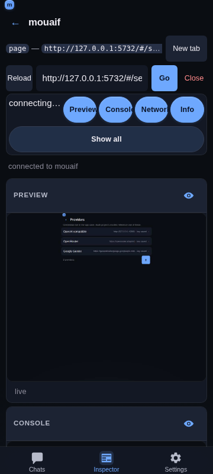

Inspector — custom DevTools-style mobile UI
Overview
The Inspector tab provides a mobile-first DevTools experience for inspecting and debugging web pages directly from your phone or desktop browser. It connects to any Chrome or Chromium browser instance running with remote debugging enabled.

Getting started
Start your browser with remote debugging enabled (default port:
9222).Open the Inspector tab in mouaif.
Verify or enter the debugger URL (
http://127.0.0.1:9222) and tap Discover targets.Select a tab from the list to inspect it.
Tip for mobile devices: To inspect a page on your physical device, forward the port with
adb reverse tcp:9222 tcp:9222and point the debugger URL tohttp://127.0.0.1:9222.
Panels
You can toggle each of the four panels on and off to customize your workspace. The panel switcher (the Preview / Styles / Console / Network / Info chip row) sits at the top of the inspect view and scrolls with the page.
With all five panels on at 375 × 667 the Styles card can sit ~800 px below the chip row, so a card the user is not looking at can be a screen away. Every action that answers in a card brings that card into view first, in one instant jump (no animation, so it reads as a consequence of the tap rather than the page moving on its own):
Showing a panel scrolls its card's header into view. Hiding one leaves the page where it is — the cards below move up on their own.
A new selection (a pick in the preview, the selector field, an element-tree hop from another panel's retained element) reveals the Styles card the same way. Re-reading the same element (a write, a Refresh, the live preview loop) never moves the page.
Arming pick mode reveals the Preview card bottom-aligned instead: the mode's instruction is "tap an element in the page", so the tap surface itself has to be in view, not just the card's header. Disarming leaves the page where the user left it.
1. Preview panel
Live page preview — captures full-height snapshots of the active page. For Chrome's built-in PDF viewer, the Inspector automatically switches to a viewport capture so Chrome includes the separately composited PDF pages instead of showing only the empty viewer UI shell.
Pick-mode banner — while the Styles panel has pick mode armed, the preview shows a Pick: tap an element in the page banner over the screenshot with a Cancel button, the tap surface is outlined in the accent colour, and the cursor is a crosshair. The same banner appears in the full-screen overlay. A selection disarms pick mode; a tap that hits nothing selectable keeps it armed. See Inspector Styles panel and Inspector touch controls.
Fit width / natural size — a toggle in the preview footer (and in the full-screen header) switches between two zoom modes. Fit scales the screenshot to the frame width, so a tall page scrolls vertically — the default for narrow pages. Natural size (100%) renders the capture at the page's own CSS size, so a wide page (e.g. the Laptop 1280 px preset) shows readable text and pans both axes instead of being squashed to a ~30% thumbnail. The capture is a device-pixel image, so the panel divides its width by the preset's
deviceScaleFactorbefore painting it: a 2×-retina Phone capture of a 375 CSS px page paints 375 CSS px wide, not 750. That keeps the page's proportions on screen, keeps the screenshot 1:1 with the physical pixels of a matching display instead of a soft 2× upscale, and keeps the panning surface four times smaller. dpr 1 captures are unchanged. Only an explicit tap on the toggle is persisted (undermouaif:inspector:previewZoom2); the auto-fit decision below is deliberately not stored, because it is derived from the frame's measured width and should be re-evaluated per viewport preset. The v1mouaif:inspector:previewZoomkey is read once and discarded: it was also written by the auto-fit path, so a derived value was indistinguishable from a real preference. On the first render the panel auto-selects a sensible default: if a page would fit the frame at ~60% width or more it stays in Fit; if it would be shrunk below that (unreadable) it switches to Natural size — so a wide page is readable without hunting for the toggle. Switching the mode manually always wins. The auto-fit threshold compares the frame against the page's CSS width, not the capture's device-pixel width, so a retina capture (the Phone/Phone+ presets atdeviceScaleFactor: 2, whose screenshot is 2× the page's CSS width) is measured correctly — a narrow phone page stays in Fit instead of being misread as too wide. "Switching it manually always wins" is enforced across remounts, not just within one: the one-shot gate is a ref, so it resets every time the panel is mounted, and the Preview panel is remounted by ordinary taps (its chip being toggled, its full-screen overlay round-tripping, a full-screen card swap). The stored value is therefore read as the mark of a decision — the v2 key is written on every toggle,fitincluded — and the auto-fit refuses to act while it is present. Without that, a wide preset snapped the preview back to natural size (panning, and losing the frame's scroll position) after the user had chosen Fit, so the preview appeared to blink between two framings on every panel switch.Interactive tapping — tap anywhere on the screenshot to click elements or interact with the page remotely. A tap is mapped to the page through the image's own bounding rect, so it stays accurate after you pan the frame (scroll down/right). The frame's scroll offset is not added a second time —
getBoundingClientRect()already accounts for it — which keeps a pan-then-tap click on the exact element you aimed at, no matter how far you scrolled.A tap is not a swipe. The preview frame is a scroll container, so on a phone every pan of the page ends with the browser firing a
clickon whatever the finger lifted over — which forwarded a real click into the inspected page at the end of every scroll, activating links and buttons the user never meant to press. The frame now tracks the gesture: a press is recorded on pointer-down and dropped once the finger moves past a ~10 px slop, once the frame scrolls (momentum, a trackpad, or a scrollbar drag can start a scroll with nopointermoveon the frame), or onpointercancel. Only a surviving tap reachesclickAt. The same guard covers the full-screen overlay.Full text input — tap a text field in the live preview to focus it, then type into the panel's Type into page bar (the keyboard icon in the Preview header). The whole string is forwarded to the focused element with CDP
Input.insertText, which handles spaces, unicode, and emoji in one shot. An adjacent ↵ button sends a real Enter keypress so forms submit and textareas get a newline instead of a literal character. The same bar appears in the full-screen preview overlay so you can keep filling forms while it's open.Scroll & navigation — scroll through tall pages and follow links in real-time.
Viewport size presets — a dropdown in the Preview panel header applies a CDP device-metrics override to the inspected page: Auto (native size), Phone (375×667), Phone+ (414×896), Tablet (768×1024), and Laptop (1280×800). The page reflows live so media queries and responsive breakpoints respond as if the browser were that size. The phone presets emulate a retina handset (
deviceScaleFactor: 2) so the capture is sharp on a real phone instead of a soft 1× upscale. The trigger is deliberately the most compact control in the header: a0.74remlabel,3pxchevron gap,12pxchevron, and0 8pxpadding, so the pill measures 60 px for Auto and 72 px for the widest preset (Laptop) at 360 px instead of 72 / 89 px. That matters because the panel head is a single row at 360 px shared with the full-screen, refresh, type, and hide/show buttons — every horizontal pixel the trigger takes comes out of the full-screen button or pushes those actions onto a second row. Only the footprint shrank; the height stays at the 44 px--tapminimum.Continuous refresh — while Preview is visible, a low-resolution CDP
Page.startScreencastsupplies event-driven repaint notifications. Each frame is acknowledged after its full-page screenshot, so Chrome applies natural backpressure while animations, typing, hover states, and DOM mutations remain live without a busy polling loop. The pacing window opens when the previous capture finished (not when it started), which keeps a slow full-page capture from being followed immediately by another one — at most one capture per ~250 ms. A screencast frame is emitted for every visual change (each animation frame of a transition, each hover, each keystroke), and each one costs a full-page PNG encode plus a decode in the<img>, so a tighter window let a busy page drive the loop at the encoder's own limit — the hitch a user reads as the preview stuttering under their finger. Lifecycle captures (Page.frameNavigatedandPage.frameStoppedLoading) plus a slow 3 s safety retry cover older targets that do not support screencasting. Captures whose PNG is byte-identical to the one already on screen are dropped before the swap, so an unchanged page re-decodes nothing and never has its scroll offsets rewritten.Unchanged captures are dropped — a page that did not change between two captures produces a byte-identical PNG. The panel compares each capture with the one already on screen and returns early when they match, so an idle page costs no image decode, no layout, and no scroll write. Without that guard every poll re-assigned the same image, which re-decoded the capture and rewrote the frame's scroll offsets on each tick — visible as the preview hitching while you scrolled it.
Capture quality — previews use lossless PNG at the inspected page's native capture resolution, avoiding JPEG artifacts around small text, colored edges, and fine UI details. The panel, full-screen view, and Draft Craft annotation all use the same lossless image; no setting is needed. The capture already is base64 PNG, so it is published straight to the
<img>as adata:URL and decoded natively by the browser; it is never copied through JavaScript (noatobbyte loop, no intermediateBlob/object URL) and no wrapper re-encodes it. Viewport sizing and tap coordinates are unchanged. PNG captures can use more bandwidth on photo-heavy pages, so the single-capture backpressure still limits work on slower connections. The discarded screencast signal stream stays low-resolution JPEG (quality: 20, 320×320) because it is only a change detector, not the rendered image.Refresh preview — a refresh button in the Preview panel header forces a fresh screenshot on tap, independent of automatic capture. During a page reload, the load-complete capture is queued behind any in-progress navigation capture so the newly loaded content replaces Chrome's transient blank frame immediately. Screenshot requests time out after 8 seconds so an unresponsive Chrome target cannot leave the preview stuck on
capturing…; automatic retries continue afterward.Full-screen preview — the Preview panel header's full-screen button opens the live preview in a viewport-spanning overlay that renders above the app dock. That button is the card's own: every panel header now carries one in the slot the panel name used to fill, and Preview's opens this overlay while the other four expand their card over the viewport (see Inspector full screen). The overlay header mirrors the Web preview modal: it shows the live page's title (from
document.titlevia CDPRuntime.evaluate) with a small host subtitle on the left, plus a Refresh button (re-captures the screenshot), a Capture size dropdown (the same Auto / Phone / Phone+ / Tablet / Laptop presets the panel uses), and a close button on the right. The page identity is seeded two ways so the header is never wrong: the panel takes the attached target's ownurl+titleon mount (a page that is already loaded when the Inspector attaches emits noPage.frameNavigated, so without this the header stayed on its raw-URL fallback with a blank host line), and it re-readsdocument.titlewhen the document finishes loading (Page.frameStoppedLoading), because the navigation-time read fires before the new document is ready and can come back empty. On narrow phones (<430 px) the Refresh button collapses to icon-only and keeps that glyph centred in its 44 px square, the size dropdown fills the remaining width, and the close button floats to the top-right corner so all controls stay inside their 44 px tap targets. The close button is offset from the header's top edge, not the viewport's: the overlay already pads out the status-bar safe area, so measuring from the viewport would apply that inset twice and drop the ✕ onto the size dropdown below it. This header keeps its two-row layout on purpose: it carries one control more than the Web preview viewer (a zoom toggle as well as Refresh, Size and Close), so forcing a single row would leave the live page title only about three characters on a 320 px phone — a worse trade than the vertical space it saves. The same capture loop keeps running, so the overlay stays live; tap-to-click and scroll still work, and the overlay closes via its close button or the Escape key. Opening it also ends the card full-screen mode, so the two states can never both be in force.Draft Craft annotation — draw on the latest preview and add it to a chat draft. The full-screen annotation surface renders above the app dock, including on narrow mobile viewports.
2. Console panel
Live logs — see
console.log,info,warn, anderrormessages with timestamps and severity indicators.Interactive JavaScript Console — execute JS expressions directly on the page with autocomplete for globals, properties, and element IDs. The editor is one line tall while it is empty and grows with the expression up to ~32 dvh, then scrolls inside itself, so the card is never mostly empty and a long entry is never clipped. Enter inserts a newline (with the line's indent) and
Ctrl/Cmd+ Enter evaluates, the same split the chat composer uses: a console entry is often several lines, and Enter is the one key a phone's soft keyboard always offers. The strip's ↵ button is the only way to indent on touch, where there is noTabkey. See Inspector JavaScript console.Stack traces — tap any log row to inspect formatted stack traces and object details.
3. Network panel
Request inspector — view live HTTP requests and responses, status codes, transferred sizes, and timing metrics.
Request headers & payloads — tap any request to inspect headers and response bodies.
Color-coded status — quick visual indicators for successful, redirected, pending, or failed network calls.
4. Info panel
Page vitals — monitor live DOM node counts, JavaScript heap usage, event listeners, frame rates, and layout recalculations.
Polling and freshness
The Info panel polls Performance.getMetrics every 2.5 s and the Preview
panel's device-preset choice (size + DPR) is read at capture time. Both read
the current value through a ref rather than closing over props:
the parent builds a fresh
metricscallback on every render, so an effect
that depended on it restarted the poll on each render — including the
render caused by every console/network row;the capture effect is keyed on the capture/subscribe callbacks, so its
imageonloadwould otherwise decide the device scale factor from
whatever preset was current when the effect last restarted.
Entry retentionBoth list panels keep the newest 2000 entries and drop the rest. The
cap applies to the backing store, not only to the rendered window: an
evicted entry releases the response body it captured (up to 200 KB) and is
removed from the request-id map, so a long session against a chatty page
(polling app, HMR loop) cannot grow the tab's heap without bound. A CDP
event for an already-evicted request is ignored rather than re-creating the
row. Disconnecting resets the buffers entirely.
Tab management
Use the top navigation bar to:
Enter a new URL to navigate the tab.
Go back — the back arrow icon navigates the tab one entry back in its history (CDP
Page.navigateToHistoryEntry). If there's no previous entry the action is a friendly no-op — the status pill reads "no page to go back to" instead of an error.Go forward — the matching arrow next to it steps the history cursor one entry the other way, for a tab you navigated back from (followed a link, tapped Back, then wanted the page again). Same no-op contract: with nothing ahead, the pill reads "no page to go forward to".
The two arrows know what is available. After every navigation the nav row reads the attached tab's session history (CDP
Page.getNavigationHistory) and disables whichever arrow has nowhere to go, so an unavailable step is visible before the tap instead of only being reported afterwards. The arrows are dimmed in place rather than hidden, so the row keeps its width — the URL field never jumps sideways when a navigation changes what is available. When the history has not been read (a fresh attach whose read is still in flight, or a read that failed) both arrows stay tappable and the server's own verdict answers the tap, so the row degrades to "tell me why" rather than to a dead control.Reload the page.
Open new tab in the attached browser.
Close tab when done — opens an in-app confirmation sheet (see below).
Every chrome control is a full-size, touch-first target. The back/forward/reload/Go buttons in the nav row, the panel-head full-screen / refresh / type / eye toggles, the preview-size dropdown, the panel chips, the Styles card header's clear / refresh / pick buttons and the identity chip in that card's body (the selected element, tap to copy its selector), and the Styles panel's touch control surface (group tabs, segment chips, steppers, unit chips, box-model edges, swatches) all use the ≥ 44 × 44 px
--tapsize, so nothing in the inspector relies on a hover-only or sub-44 px tap. The dropdown, popover, and target-row menus also use 44 px rows. A disabled history arrow keeps that 44 px size and is dimmed in place rather than removed, so the row's other controls never shift under the thumb.
The inspector header icon buttons are glyph-only (the panel-head controls: full screen, Draft Craft, refresh, type into page, hide/show, and the nav-row back/reload). Every button keeps itsaria-label+titlefor assistive tech, since the tooltips that carry their meaning don't exist on touch. The full-screen button sits in the slot the panel's name used to occupy on every card — the name is already spelled out by that panel's chip in the switcher above, and the button carries it in its accessible name (see Inspector full screen). The Styles card header's clear / refresh / pick buttons follow the same rule — glyph-only, labelled for assistive tech — because they sit in the same row as that card's eye and there is room for four 44 px controls at the 360 px minimum.The selected element's own identity (
header.image-mode-dialog-headerplus its box size) is a tappable chip, the first row of the Styles card body, and it taps to copy the selector — the desktop Styles pane's Copy selector. The outcome is reported in the status pill, so a blocked clipboard write is visible instead of silent. The three card-wide actions that used to share that line — Clear, Refresh and Pick, three labelled buttons — moved up into the card header instead, which is where the panel's other chrome lives; with the whole row to itself the identity fits the labels the inspector produces at the 360 px minimum (only a pathologically longtag#id.classstill ellipsizes, where the old shared row ellipsized everything), and the header stays on a single line. The chip disappears when the selection is cleared with ✕, and it comes back when the panel is switched off and on again, because the panel re-adopts the element the Inspector retains.
Closing a tab
Close tab is destructive, so the Inspector prompts for confirmation before sending the request to Chrome. Both entry points (the per-row … menu in the targets list and the header overflow menu of an attached tab) open the same in-app sheet:
The sheet shows the tab's title in quotes (or the URL host when the title is empty) so the user can confirm the right target.
Cancel dismisses the sheet with no network call.
Close tab sends
POST /api/inspector/closewith{ targetId }. On success the Inspector disconnects the live CDP session, returns to the targets list, and refreshes the target list so the closed tab disappears. Failures surface on the status pill instead of re-opening the sheet.Target-row menu actions pass the selected target first and the action name second, matching the shared action handler. This keeps both Reload and Close tab functional from each row's
…menu.The previous design used
window.confirm, which some embedded web views auto-dismiss and returnfalsewithout rendering a dialog; the close handler then early-returned and the user saw the button as inert (no status pill, no network call). The in-app sheet renders inline so it always renders, always accepts input, and obeys the mobile-first UI rules (≥ 44 × 44 px tap targets, safe-area padding).
Implementation notes
The Inspector's styles are the biggest CSS surface in the app, so they are split by panel:
frontend/src/inspector.cssis the entry point that@imports thirteen parts (inspector-chrome.css,inspector-targets.css,inspector-pick-mode.css,inspector-panels.css,inspector-sheets.css,inspector-profiles.css,inspector-target-bar.css,inspector-value-suggestions.css,inspector-value-rail.css,inspector-value-kinds.css,inspector-intent.css,inspector-value-type.css,inspector-styles.css). The order of those imports is the cascade — several sections override earlier ones — and Vite inlines them into the same bundle the single file produced.Chrome profiles (hidden) — mouaif can list the Chrome user profiles on this machine and switch which one the Inspector attaches to. The setup screen's entry point for it is currently off (
PROFILES_ENTRY = false); the module, routes and sheet are intact. See Inspector Chrome profiles.
Related
Inspector JavaScript console — the editable console under the log, with Run and indent buttons.
Inspector Styles panel — tap an element to edit its CSS.
Add Inspector entries to a chat — send a log row or a request to a draft.
Chrome Debug MCP — letting the AI assistant automate the browser.
Web preview tool — in-chat page preview thumbnails.